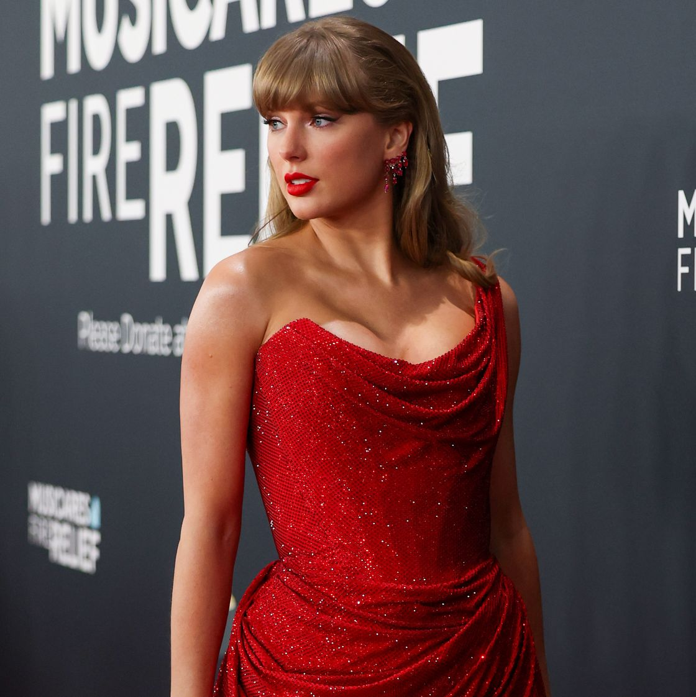

<!DOCTYPE html>
<html lang="pt-br">
<head>
    <meta charset="UTF-8">
    <meta name="viewport" content="width=device-width, initial-scale=1.0">
    <link rel="stylesheet" href="style.css">
    <title>Portifólio TS</title>
</head>
<body></body>
</html>
<body>
    
    <p>Meu nome é Taylor Swift_</p>
  <h1>"All's fair in love and poetry"</h1>
  </body>
  <p>
    Eu iniciei minha carreira como cantora aos 16 anos. Nasci no dia 13 de dezembro de 1989. Participei de diversos projetos teatrais quando ainda era criança e desenvolvi então meu interre pela indústria musical. Minhas inspirações foram os clássicos do country Shania Twain e Dixie Chicks. 
    Me mudei para Tennesse aos 13 anos, já que assim estaria mais próxima das gravadoras do estilo country da região. Um ano mais tarde, assinei com a Sony/ATV como compositora. Em uma das minhas apresentações, Scott Borchetta me deu uma chance na sua própria gravadora Big Machine, e foi lá que pude lançar meu primeiro single "Tim McGraw". Fui reconhecida como platina em 2007. 
  Sou natural de Reading, Pênsilvania. Fiquei na Big Machine até 2018. Minha turnê solo a "Fearless Tour". Em 2010, recebi 4 grammys. Escrevi "Speak Now" em 2010 e no ano seguinte fiz a turnê dele. 
  Tenho gatos. 
</p>
